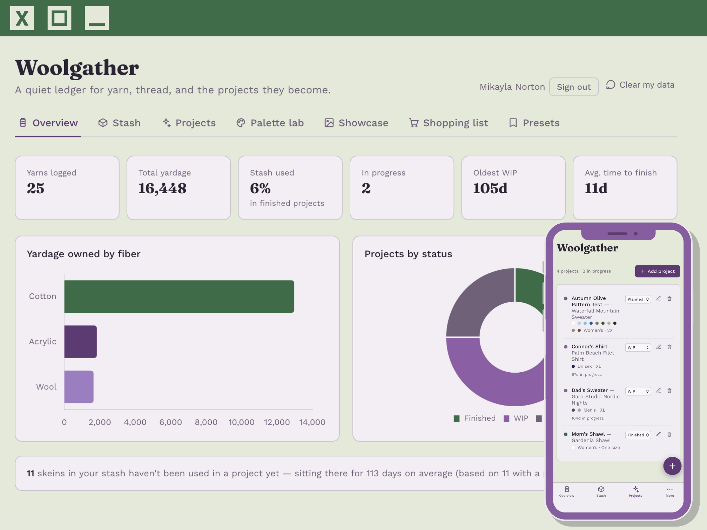

Senior Data Scientist · Portland, OR
“Turning messy data into things people actually use.”
A quiet ledger for yarn, thread, and the projects they become.
A yarn-stash and project ledger that real makers use daily. An installable progressive web app with Firebase auth & sync, OCR receipt capture, and full offline support — designed, built, and shipped solo. Proof the work doesn't stop at the analysis: it goes all the way to something people open every day.

A mix of shipped products and applied ML — most are live, interactive, and yours to try.
Connects to Spotify and turns your listening history into a visual taste profile — then scores how well any artist matches you, 0–100, with the shared genres that explain why.
An ASL-alphabet image classifier — and a study in adversarial robustness, probing how attacks fool the model and how to defend against them.
A research demo that sorts uploaded brain-MRI scans into four tumor types with a convolutional neural network, reporting its confidence for each.
A graduate capstone with Michigan's EGLE — an interactive map and search tool for weighing brownfield sites by their potential for solar-energy redevelopment.
A data web app tracing how per-capita emissions have shifted by region from 1750 to 2021 — built for a graduate data-viz course.
A statistical model that predicts a track's popularity from its audio features — where music meets regression.
Peer-reviewed work — the rigorous end of the same curiosity.
I'm a data scientist who likes the messy middle — the part where a vague question meets real, imperfect data and has to become something useful. My background runs from supply-chain engineering into machine learning, so I tend to think about data problems as systems: where the data comes from, who acts on the answer, and what has to be true for it to hold up in production.
At Humana I work on applied ML and analytics in healthcare; before that I was at Intel. Outside of a day job, I build — most recently Woolgather, a full product I designed and shipped end to end. That instinct to finish the thing, not just prototype it, is the throughline of how I work.
I care about work that's precise, a little opinionated, and actually gets used.
A through-line of leadership and STEM outreach — mostly focused on bringing more women into engineering and computing.
The build instinct doesn't switch off after work. Woolgather started as a way to track my own yarn stash; the little widget beside this started as a weekend question — could I get my current on-repeat song to surface itself automatically?
So I wrote a small bot that pulls my most-played track from the Spotify API on a schedule and updates the site on its own. It's a tiny thing, but it's the kind of tiny thing I can't leave alone.